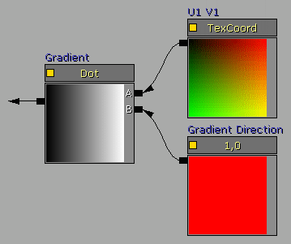
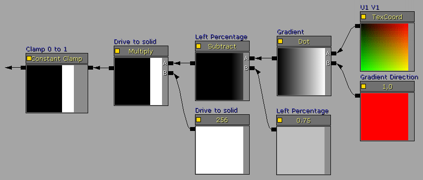
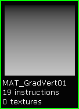
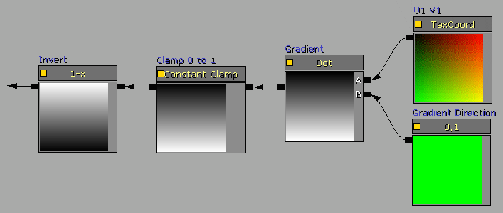
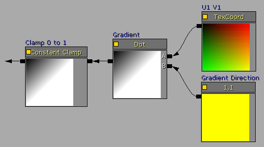
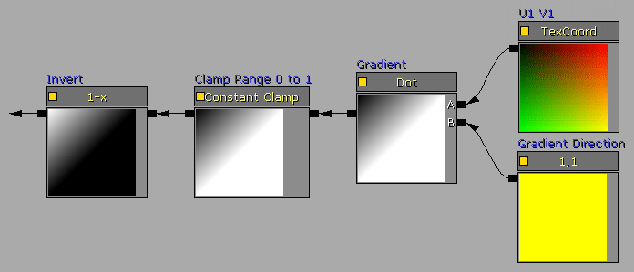
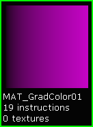
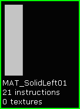
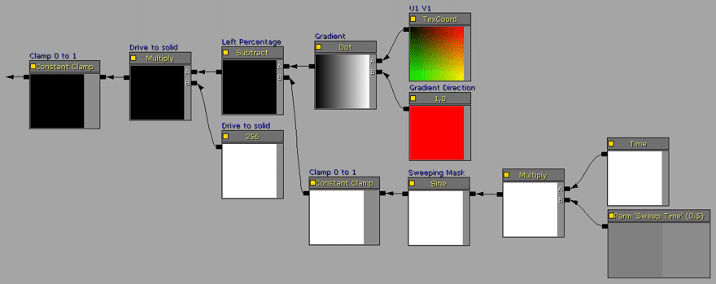

UDN
Search public documentation:
MaterialMasksCH
English Translation
日本語訳
한국어
Interested in the Unreal Engine?
Visit the Unreal Technology site.
Looking for jobs and company info?
Check out the Epic games site.
Questions about support via UDN?
Contact the UDN Staff
日本語訳
한국어
Interested in the Unreal Engine?
Visit the Unreal Technology site.
Looking for jobs and company info?
Check out the Epic games site.
Questions about support via UDN?
Contact the UDN Staff
材质蒙板
概述
使用算法设计的表达式蒙板的优势包括： 由于没有贴图所以包的大小较小；可以在虚幻编辑器中快速地编辑蒙板；带动画的蒙板可以使用各种材质表达式，包括 Panner(平移器)、Rotator(旋转器)、Sine(正弦)、Time(时间)等等；以及 Kismet 可以控制各种蒙板属性。 这些算法蒙板可以用于标准的基于贴图的材质中：来提供 不透明/半透明 蒙板；遮挡材质的特定区域来改变它的高光量或高光次幂；作为 LinearInterpolate（线性插值）表达式的蒙板来把多个贴图混合到一起；或者甚至仅仅为特效创建一个具有渐变颜色设置的材质。
基本的构建块
DotProduct（点积）表达式需要两个输入值，且这两个它们必须有相同数量的“通道”，在这个特定的情况下每个输入端有两个通道，使用一个提供 U 和 V 的 TexCoord 和一个提供 R 和 G 的 Constant2Vector。
DotProduct（点积）操作读入这两个数据集合然后返回一个标量，当使用适当的输入值时，它可以产生一系列的类似于渐变的值。 连接到 DotProduct（点积）表达式的 A 节点的 TexCoord 表达式的默认 UV 值为 1.0，当它和值为 0 及 1 的 B 节点相结合时，将产生一个平滑的渐变。

改变 TexCoord UV 的值将会改变渐变。然而，这个效果也可以通过改变连接到 B 节点的 Constant2Vector 表达式的值来更好地完成。 连接到 DotProduct（点积表达式）的 B 节点的 Constant2Vector 表达式提供了用于计算标量的第二对值。通过使用在 0 到 1 范围内的值，DotProduct（点积）表达式将产生一个灰度值范围在 0 到 1 的渐变。
连接到 DotProduct（点积表达式）的 B 节点的 Constant2Vector 表达式提供了用于计算标量的第二对值。通过使用在 0 到 1 范围内的值，DotProduct（点积）表达式将产生一个灰度值范围在 0 到 1 的渐变。设置 Constant2Vector 的值为 R=0 G=1 将会创建一个垂直渐变。值 R=1 G=0 将会创建一个水平渐变。R=1 G=1 将会创建一个角渐变。使用值 -1 将会创建其它的变种，但通常不是那么有用。
 对于材质，值 0.0 是黑色，值 1.0 是白色。比 1.0 高的值将会把颜色”推向”光溢出状态。这个功能可以用在算法蒙板中，来随着颜色纯度状况来改变渐变的百分比，从而可以提供较小的渐变过渡或则较柔和的渐变边缘。
对于材质，值 0.0 是黑色，值 1.0 是白色。比 1.0 高的值将会把颜色”推向”光溢出状态。这个功能可以用在算法蒙板中，来随着颜色纯度状况来改变渐变的百分比，从而可以提供较小的渐变过渡或则较柔和的渐变边缘。设置 Constant2Vector 的 RG 属性中任何一个的值大于 1 将会修改从黑色到白色的渐变范围量，从而可以降低渐变百分比，增加白色百分比。ConstantClamp 表达式可以添加到 Constant2Vector 的输出端来把范围重新限定为 0 到 1 之间。
 为了创建具有固体边缘而不是渐变边缘的蒙板，可以使用一个 Subtract（减法）表达式来设置固体黑色区域的数量，并使用一个 Multiply（乘法）表达式来使输出为一个纯黑色和纯白色的过渡。
为了创建具有固体边缘而不是渐变边缘的蒙板，可以使用一个 Subtract（减法）表达式来设置固体黑色区域的数量，并使用一个 Multiply（乘法）表达式来使输出为一个纯黑色和纯白色的过渡。

总括
值的动画也可以使用各种材质表达式来完成，这包括 Panner(平移器)、Rotator(旋转器)、Sine(正弦)、Time(时间)等等。 垂直渐变

 垂直渐变
垂直渐变

 亮度增高 50% 的水平渐变
亮度增高 50% 的水平渐变

 垂直渐变
垂直渐变

 垂直渐变
垂直渐变


角渐变

角渐变

颜色渐变
 快速的颜色渐变
快速的颜色渐变

 多频带颜色渐变
多频带颜色渐变

 三点渐变
三点渐变

 纯色（顶部）
纯色（顶部）

 纯色（底部）
纯色（底部）

 纯色（左侧）
纯色（左侧）

 纯色（右侧）
纯色（右侧）

 纯色（边框）
纯色（边框）


带动画的蒙板实例
